以编排节奏 和产品角色完成秋冬系列的最终取舍、连接与呈现
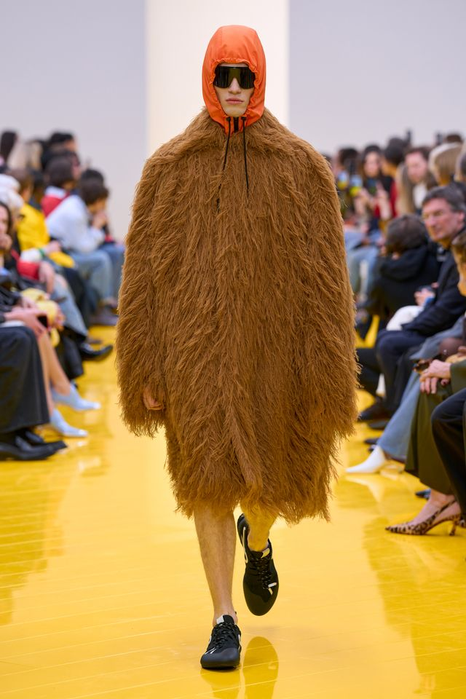
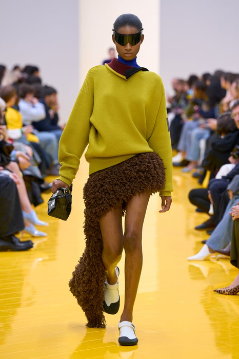
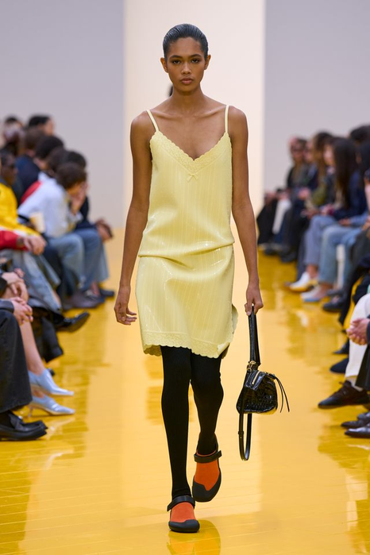
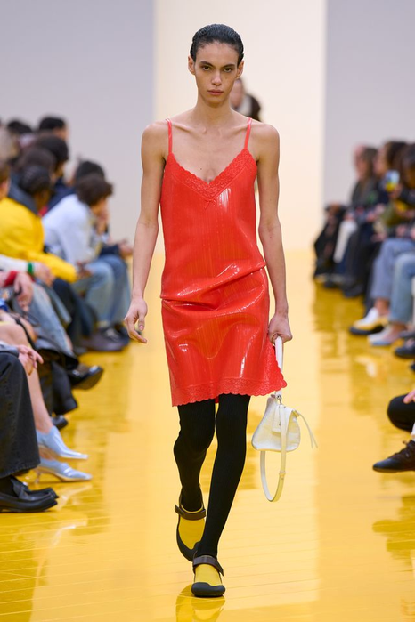
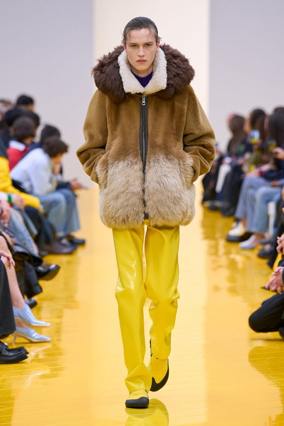
前8周建立方法并完成中期验证；后8周深化春夏与秋冬系列，最终独立完成主题系列与答辩。
不是听懂概念，而是让判断进入图、样片、系列编排和编辑记录。
以 形象款／连接款／入口款 角色和 编排节奏 统整概念、实验与产品。
在作者性、系列统一、女性穿着、市场定位与产品丰富度之间做有证据的删减。
完成5套秋冬 最终系列编排、产品架构、搭配系统与三分钟答辩结构。
提交秋冬最终系列包：5套系列编排、形象款详图、产品矩阵、色材索引、编辑日志和答辩页。
第11周回答“这些结构用真材料站不站得住”；本周回答“哪五套进入最终系列，为什么删掉其余的”。
对应：课程目标2“培养学生女装产品的设计能力”；考核内容“系列女装设计”占 40%；每一项课堂输出都能进入平时成绩或期末实践。
把 第11周 的材料与动作测试结果写回每个造型。
按 形象款、连接款、入口款 重新标记并检查数量比例。
从长度、体量、色彩、材料密度和开合调整系列编排顺序。
拆分核心单品、补足搭配关系、限定价格与使用场景。
用研究—规则—实验—系列—市场五步讲清设计成立的证据。
两组学生作品，两种板面策略——先看它们各自把什么放在最显眼的位置。
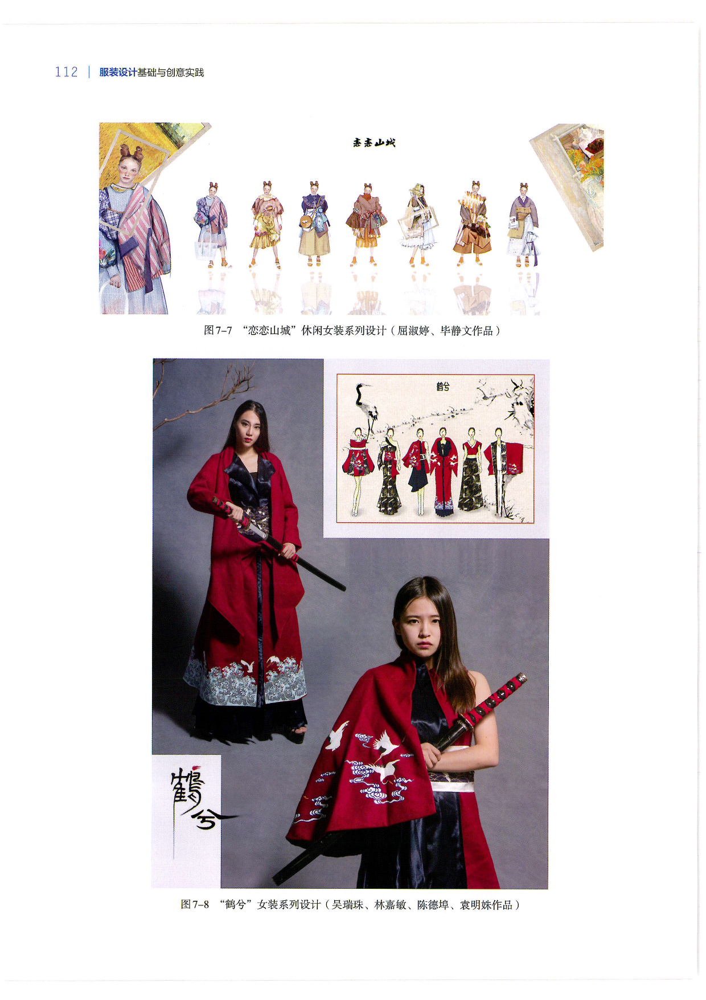
上：图7-7“恋恋山城”七套并列，左右两端放灵感来源。先给依据，再给结果——观看者能一眼确认款式从哪里来。
下：图7-8“鹤兮”实物照片占大半，效果图缩到角落。先给完成度，再给推演——适合已经打样、要证明可实现的阶段。
共同点：两块板都能让人在三秒内数清有几套、看出统一语言在哪里。
观察任务：你的板面属于哪一种？把最想被先看到的那一项，放到最大的那个位置。
来源：于芳《服装设计基础与创意实践》（中国纺织出版社，2023），第112页。图像保持原始比例，仅做边界裁切。
同一本教材的同一页把两者并排——差别不在好坏，在于要回答谁的问题。
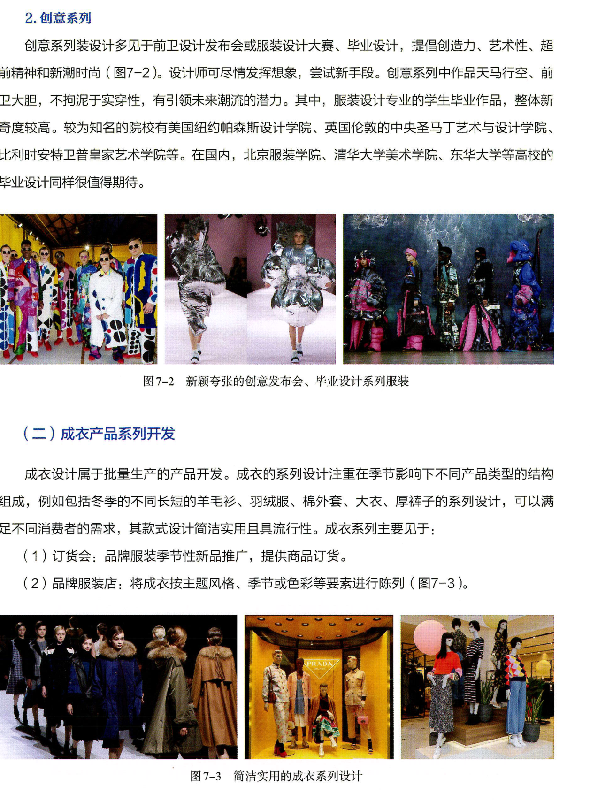
上：图7-2 创意系列见于发布会、设计大赛与毕业设计。教材写它“不拘泥于实穿性，有引领未来潮流的潜力”——评价标准是新奇度与观念。
下：图7-3 成衣系列见于订货会与品牌服装店。教材写它“注重在季节影响下不同产品类型的结构组成”——评价标准是品类是否配齐、能否陈列与订货。
你的五套必须两头都占：形象款承担上面那一栏，入口款承担下面那一栏。只有一头，系列就不完整。
观察任务：把你的五套分别投到上下两栏，看看有没有一栏是空的。
来源：于芳《服装设计基础与创意实践》（中国纺织出版社，2023），第107页。图像按教学需要裁切局部，未改变原始比例。
术语必须能够指导一个动作或判断。
最集中表达系列立场与视觉记忆的造型，不等于最复杂或最夸张。
把实验语言转译为下一组产品，使系列变化连续可读。
在保留系列识别的前提下，强化品类清晰度、穿着性和搭配价值。
依据概念、证据、角色、节奏和市场边界进行保留、删除、补位与排序。
这四对不是并列的原则，是互相拉扯的力。看到失败信号，说明这一对失衡了。
形象款越强，规则越难转译到别的品类。
失败信号：连接款只是形象款的缩小版。
规则拆得太细，入口款就丢掉了系列识别。
失败信号：入口款单独拿出来，认不出属于这个系列。
为了凑产品宽度硬补品类，补出来的款没有依据。
失败信号：问"它解决什么"，答不上来。
只有五套，强度分布必须有落差。
失败信号：连着三套强度相同，或形象款超过两套。
不比谁高级，比决定顺序的依据不同：一个服务于阅读，一个服务于购买。
按情绪递进：开场、转折、收束，观看者一路被带着走。
按品类价格：外套一组、裙装一组，方便订货与陈列。
你的五套用哪一种？两种混用会让顺序失去意义。
依赖整体：把配件和层搭去掉，造型就散了。
单件自带识别：一件外套单独挂起来，仍能看出属于这个系列。
检验方法：把每套只留一件主件，看还剩多少。
折中：把强的削弱、把弱的加强，结果五套都是中间值。
分层：同一条规则，做出高中低三种进入门槛。
折中会让系列平掉；分层才留得住作者性。
整组只有一个色域、一种材料光泽——差异全部来自品类、露出面积和边缘处理。
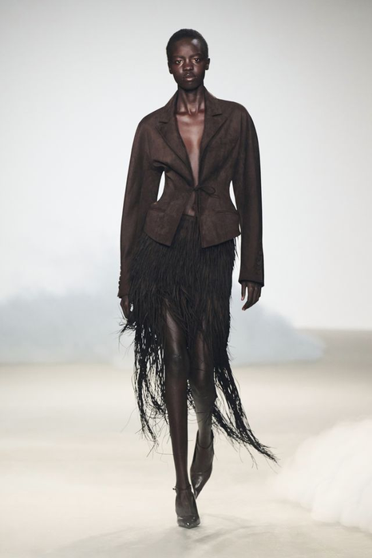
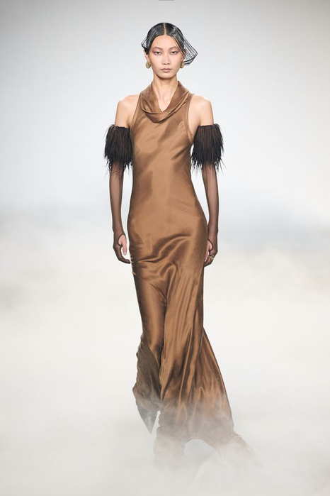
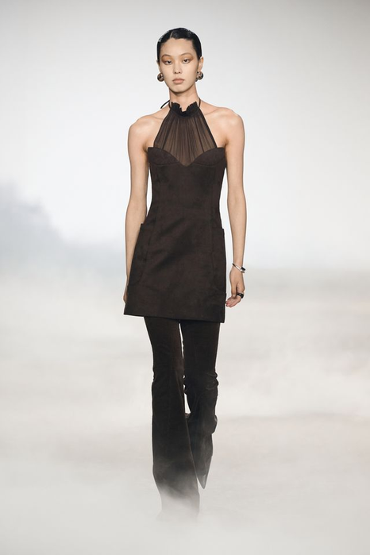
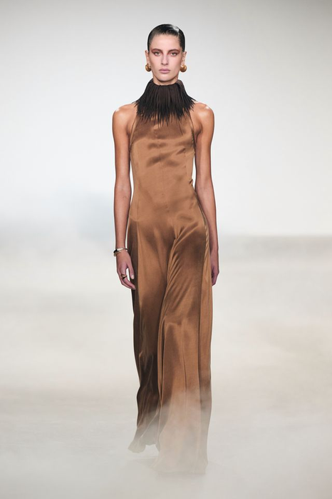
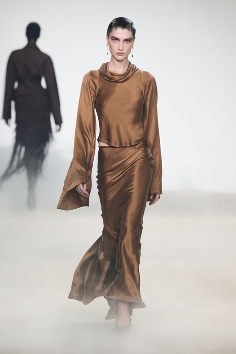
课堂回答：把五套按“能不能日常穿”排序。排在最后的那一套，它换来了什么？
品类不变、结构不变的情况下，只剩材料、长度和明度三个变量可用。
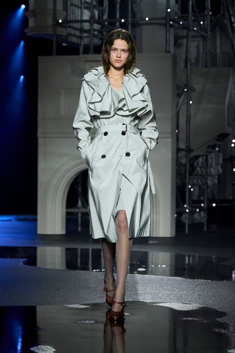
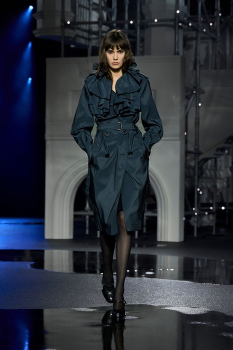
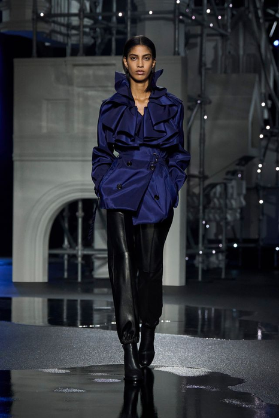
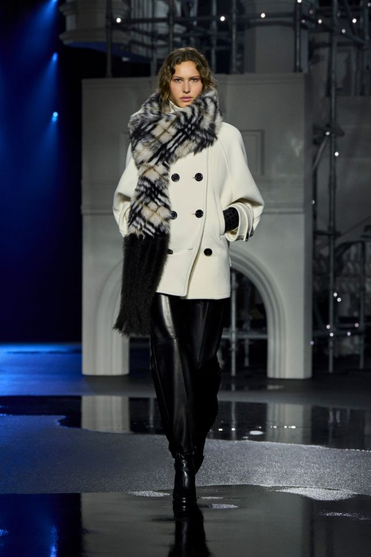
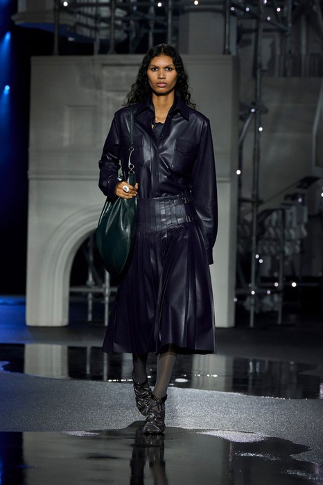
五套全是外套，却不重复——因为每一套只改一个变量。你的五套里，有没有两套改了同样的东西？
课堂回答：五套里哪一套最像“已经在卖的商品”？它牺牲了什么换来可穿性？
每个阶段结束都要留下图像、标注或修改记录。
为每个造型贴上 第11周 的材料、动作和结构验证结论。
标记 形象款／连接款／入口款，检查是否形象款过多、入口产品不足。
完成叙事优先与产品优先两套 系列编排，比较各自得失。
删除一个重复造型，新增一个角色或品类明确的方案。
第1课时完成了角色审计与排序；第2课时把编排拆成单品、价格与场景，做最终取舍。
方法与实验9′ → 实作28′ → 讲评与评价5′ → 预告与离堂3′
每个动作都必须产生可比较的前后版本。
先锁定 1–2 个最能表达概念且经过样衣验证的 形象款。
从形象款提取一条结构或材料规则，转译到不同品类与强度。
把整体造型拆成可识别单品，检查单件与搭配的双重价值。
移除无功能细节、重复材料和过多焦点，让主规则被看见。
根据品类、价格和场景空缺补充产品，而不是补画相似造型。
以体量、明暗、长度和材料密度重排两种以上 系列编排。
用材料、工艺、复杂度和顾客场景建立相对价格梯度。
每页只证明一个判断，按研究—规则—实验—结果—反思组织证据。
矩阵用来生成与比较，不要求把所有组合都做成最终款。
| 变量 | A | B | C | D |
|---|---|---|---|---|
| 产品角色 | 形象款 | 连接款 | 入口款 | 搭配款 |
| 造型强度 | 极强 | 强 | 中 | 低 |
| 体量节奏 | 扩张 | 收缩 | 垂直 | 局部 |
| 价格层级 | 形象款 | 高价款 | 核心款 | 入口款 |
| 穿着场景 | 展示 | 社交 | 通勤 | 跨场景 |
怎么用：五套各占一列。先定“产品角色”这一行，其余四行必须跟着它同向走。
数量分配：形象款 1 套、连接款 1–2 套、入口款 1–2 套、搭配款不超过 1 套。
无效组合：“入口款 × 造型强度极强”“形象款 × 通勤场景”——角色与强度、场景对不上就不成立。
基准型与V1-V3必须使用相同视角、比例和标注方式。
保持已有 5 个造型和顺序，记录连续三项相似造成的节奏问题。
记录格式：五套并列缩略图一张，下面写一句：哪三套看起来最像。
造型不变，只改变排列，比较开场、转折与收束的清晰度。
记录格式：两版顺序并排，各自标出开场、转折、收束落在第几套。
选一个形象款，降低材料或细节强度，测试连接款与入口款两种转译。
记录格式：同一套的三个版本（原／连接／入口）同视角并列，写下各自去掉了什么。
保持设计规则，将一个整体造型转为上装、下装或外套，检查产品扩展。
记录格式：原造型 + 拆分后的单品平面图，圈出被保留下来的那条规则。
每一套既要有角色，也要有位置——角色决定它承担什么，位置决定它什么时候出现。
用最集中的一套宣布主规则，清晰优先于复杂。
把 01 的规则换一个品类做一遍，证明它可以离开原来的载体。
改变明度、长度或开合，避免中段三套读起来一样。
强度降到最低，但系列识别必须还在——这是最难的一套。
回收开场线索，用外套或层搭把整组收住。
检查：把 01 和 05 对调，系列如果照样成立，说明顺序还没有承担意义——重排。
最后5分钟必须写下下一步动作，不能只停留在讨论。
从 5 个造型中拆出核心单品，建立外套、上装、下装、连衣裙与配件表。
为核心单品建立两种搭配和相对价格层级，检验顾客入口。
用五页讲清研究、设计规则、材料实验、最终系列编排 和市场定位。
教师与同伴只标出一项保留、一项删除和一项必须补证的判断。
评审者只有 60 秒。四类证据要能各自独立被找到，不能混在一张图里。
统一比例与视角，标注 形象款／连接款／入口款 和顺序逻辑。
不合格：五套的视角或比例不统一，并排放在一起没法比较。
正背面、关键结构、材料样、层搭剖面和验证照片。
不合格：只有正面效果图；缺材料样或缺样衣验证照片。
品类、价格层级、场景、搭配、材料与色彩面积一页对照。
不合格：价格层级写不出依据——说不清凭材料、工艺还是复杂度定的。
保留/删除日志、五页答辩结构和 300 字设计陈述。
不合格：删除日志只写“删了哪套”，不写为什么删。
禁止只说好看、不好看、再丰富一点。
你的判断在图、样片或系列编排的哪里？
本周指向：指出是第几套、哪个部位，不能只说“整体感觉”。
这个形式为何回应主题、身体或市场条件？
本周指向：说明这一套承担的是形象、连接还是入口，凭哪一点。
应该保留、删除、替换还是补位？
本周指向：如果删掉它，系列少了什么？答不出来，就该删。
下一版具体改变哪个变量，如何验证？
本周指向：指定要补的角色或品类，并说明补进去以后顺序怎么改。
标记为“成立 / 部分成立 / 需重做”，并写下证据位置。
主题回应当代语境，并形成明确而非表面的创意立场。
元素提取与趋势判断有研究证据，视觉选择协调。
身体关系、穿着态度和女性形象具有清晰当代判断。
造型完成度高，角色与节奏构成完整阅读。
顾客、场景、品类、价格和搭配关系明确。
五套共享同一设计规则，同时在角色、品类与强度上形成跨度。
前12周的方法从这里起由你自己调用。带去的不是作品，是能复用的判断工具。
最终编排图，每套标注角色与它在顺序中的位置。
这是你证明“方法能用”的唯一凭据。
至少三条删除决定，每条写清删的理由。
下周选题时，删除标准比保留标准更有用。
写出三个想做的主题，每个配一句“我要回答的问题”。
下周第一节课就要从三个里定一个。
用一句话写出“本学期我还没弄明白的是______”。
剩下四周就用来回答它。
平时训练不是零散作业，而是期末系列的证据积累。
主题回应当下，并形成自己的问题与立场。
提炼的设计元素与当季趋势、审美和来源一致。
款式回应身体、动作、场景与真实穿着需求。
比例、色彩、材料与细节共同形成完整造型。
顾客、价格、品类和使用情境边界清楚。
风格统一，同时具有角色、搭配与造型变化。